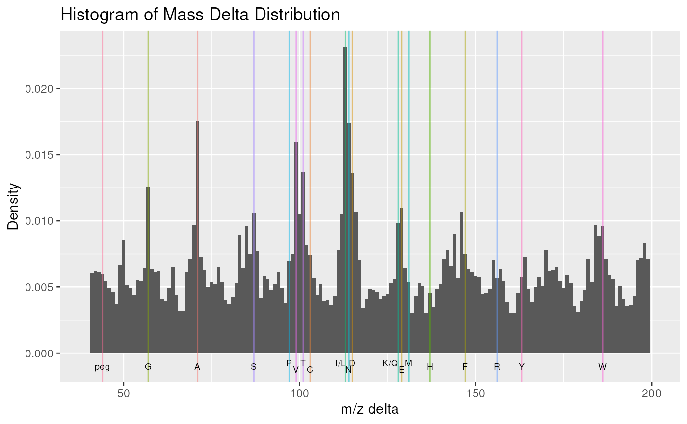

plotMzDelta-methods.RdThe m/z delta plot illustrates the suitability of MS2 spectra for identification by plotting the m/z differences of the most intense peaks. The resulting histogram should optimally shown outstanding bars at amino acid residu masses. The plots have been described in Foster et al 2011.
Only a certain percentage of most intense MS2 peaks are taken into
account to use the most significant signal. Default value is 10% (see
percentage argument). The difference between peaks is then
computed for all individual spectra and their distribution is plotted
as a histogram where single bars represent 1 m/z differences. Delta
m/z between 40 and 200 are plotted by default, to encompass the
residue masses of all amino acids and several common contaminants,
although this can be changes with the xlim argument.
In addition to the processing described above, isobaric reporter tag
peaks (see the reporters argument) and the precursor peak (see
the precMz argument) can also be removed from the MS2 spectrum,
to avoid interence with the fragment peaks.
Note that figures in Foster et al 2011 have been produced and optimised for centroided data. Application of the plot as is for data in profile mode has not been tested thoroughly, although the example below suggest that it might work.
The methods make use the ggplot2 system. An object of class
ggplot is returned invisibly.
Most of the code for plotMzDelta has kindly been contributed by Guangchuang Yu.
An object of class MSnExp or mzRramp
(from the mzR package) containing MS2 spectra.
An object of class class
"ReporterIons" that defines which reporter ion
peaks to set to 0. The default value NULL leaves the spectra
as they are.
A numeric between 0 and 1 to use a subset of
object's MS2 spectra.
The percentage of most intense peaks to be used for the plot. Default is 0.1.
A numeric of length one or NULL
default. In the latter (and preferred) case, the precursor m/z
values are extracted from the individual MS2 spectra using the
precursorMz method.
A numeric of length 1 that specifies the
width around the precursor m/z where peaks are set to 0. Default is
2.
A numeric specifying the bandwith to be used to bin
the delta m/z value to plot the histogram. Default if 1. See
geom_histogram for more details.
A numeric of length 2 specifying the range of
delta m/z to plot on the histogram. Default is c(40,200).
A logical defining if amino acid residue
labels are plotted on the figure. Default is TRUE.
A numeric of length 1 specifying the font size of
amino acids lables. Default is 2.5.
A logical of length 1 that defines whether the
figure should be plotted on the active device. Default is
TRUE. Note that the ggplot object is always returned
invisibly.
A logical of length 1 specifying whether
textual output and a progress bar illustration the progress of data
processing should be printed. Default is TRUE
signature(object = "MSnExp", ...)Plots and (invisibly) returns the m/z delta histogram.
The plotDensity and plot2d methods for
other QC plots.
Foster JM, Degroeve S, Gatto L, Visser M, Wang R, Griss J, Apweiler R, Martens L. "A posteriori quality control for the curation and reuse of public proteomics data." Proteomics, 2011 Jun;11(11):2182-94. doi:10.1002/pmic.201000602. Epub 2011 May 2. PMID: 21538885
mzdplot <- plotMzDelta(itraqdata,
subset = 0.5,
reporters = iTRAQ4,
verbose = FALSE, plot = FALSE)
## let's retrieve peptide sequence information
## and get a table of amino acids
peps <- as.character(fData(itraqdata)$PeptideSequence)
aas <- unlist(strsplit(peps,""))
## table of aas
table(aas)
#> aas
#> A C D E F G H I K L M N P Q R S T V W Y
#> 70 1 53 49 12 53 6 32 41 63 16 26 20 29 14 36 47 58 3 13
## mzDelta plot
print(mzdplot)
#> Warning: The dot-dot notation (`..density..`) was deprecated in ggplot2 3.4.0.
#> ℹ Please use `after_stat(density)` instead.
#> ℹ The deprecated feature was likely used in the MSnbase package.
#> Please report the issue at <https://github.com/lgatto/MSnbase/issues>.
#> Warning: Removed 2 rows containing missing values or values outside the scale range
#> (`geom_bar()`).
#> Warning: Removed 2 rows containing missing values or values outside the scale range
#> (`geom_vline()`).
#> Warning: Removed 2 rows containing missing values or values outside the scale range
#> (`geom_text()`).
